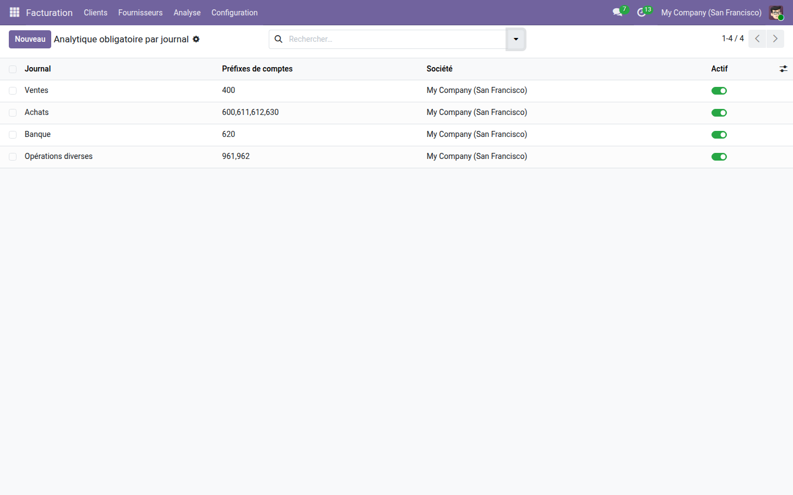
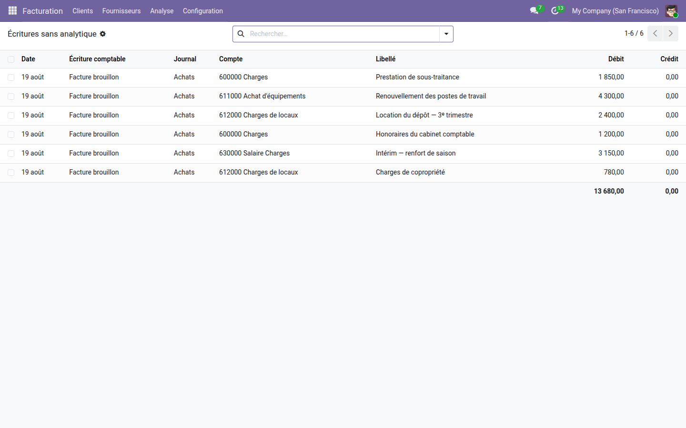

Le critère qui manque à Odoo — le journal — et le contrôle avant comptabilisation.
Odoo sait déjà rendre l'analytique obligatoire : l'applicabilité des plans analytiques l'exige par domaine d'activité, par préfixe de compte et par catégorie d'article. Deux choses y manquent. Le journal, qui est pourtant la façon dont la plupart des cabinets raisonnent — tout ce qui passe par les achats est ventilé, le reste ne l'est pas. Et le moment : le contrôle du cœur ne parle qu'à la comptabilisation, quand la saisie est finie et que l'écran affiche une erreur au lieu d'un résultat.
Les achats sur quatre familles de charges, les ventes sur le compte de produits, la banque sur les seuls frais bancaires. Chaque règle se lit d'un coup d'œil, et se coupe sans être supprimée.

Les lignes de brouillon que les règles réclament, avec leur compte, leur libellé et leur montant, totalisées. La correction se fait ici, à froid, plutôt qu'au moment de comptabiliser.

Exiger la ventilation est une chose ; contrôler qui saisit dans quel journal en est une autre. La gamme OdooSkills couvre le cloisonnement des journaux et des plans analytiques, l'approbation des écritures et des factures fournisseurs, et les tableaux de bord de trésorerie. Catalogue complet : apps.odooskills.com.
Licence LGPL-3 — compatible Odoo 19.0 Community et Enterprise. Support : support@odooskills.com.